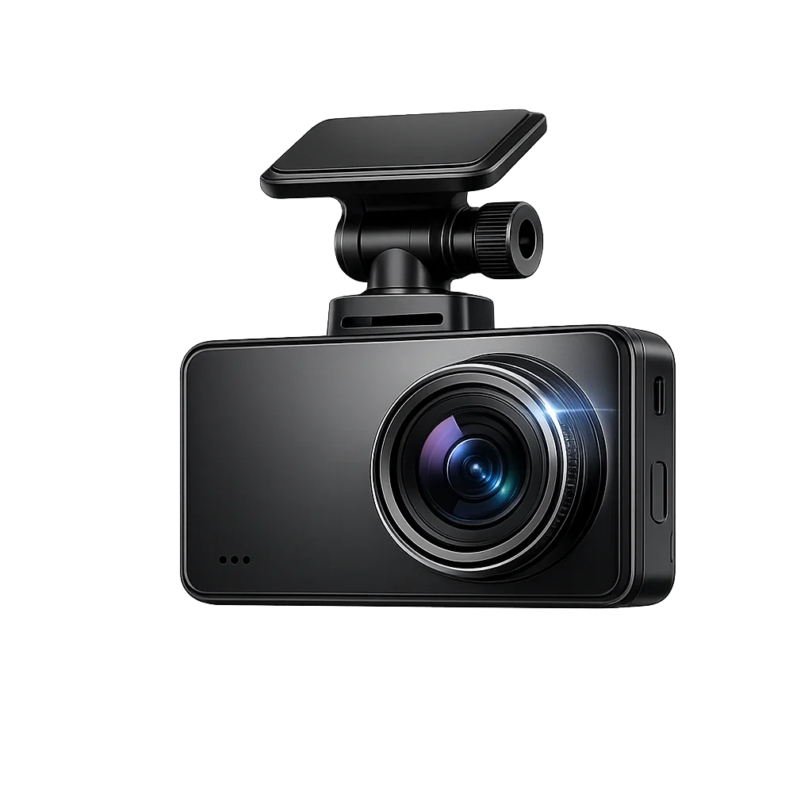
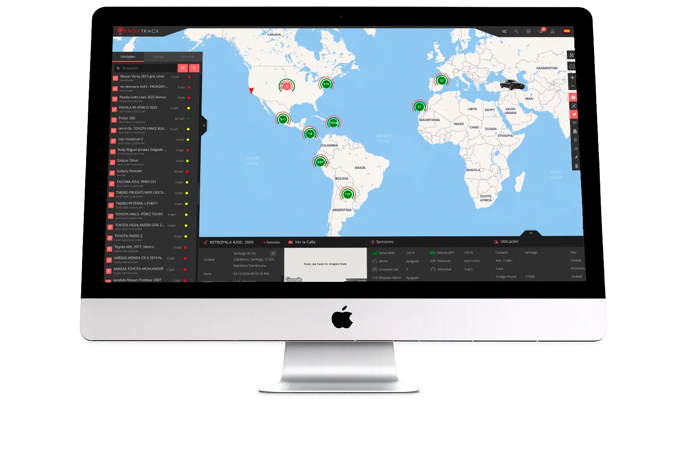
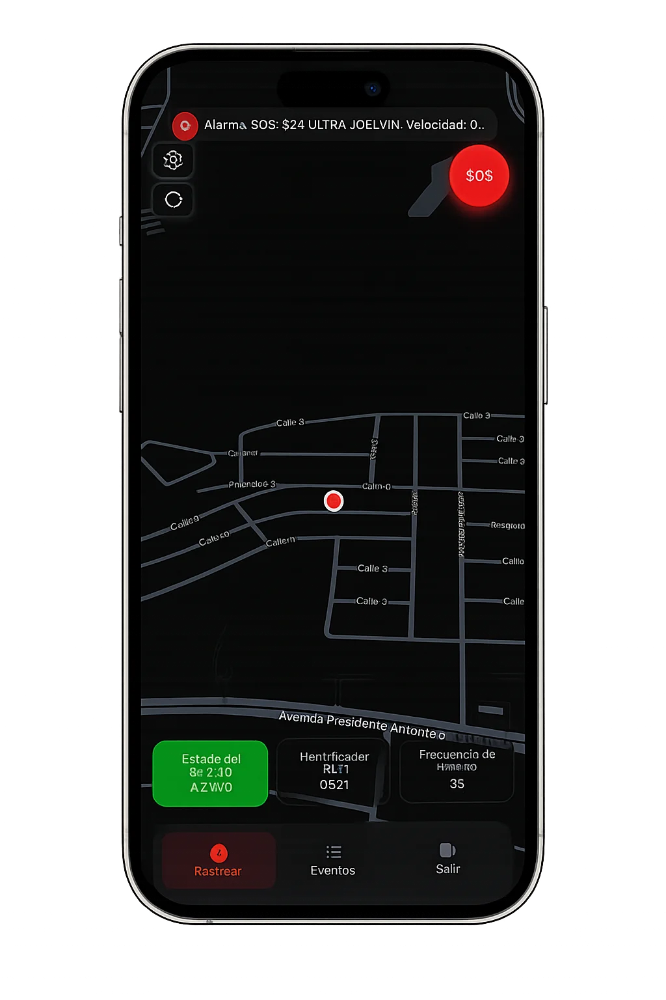
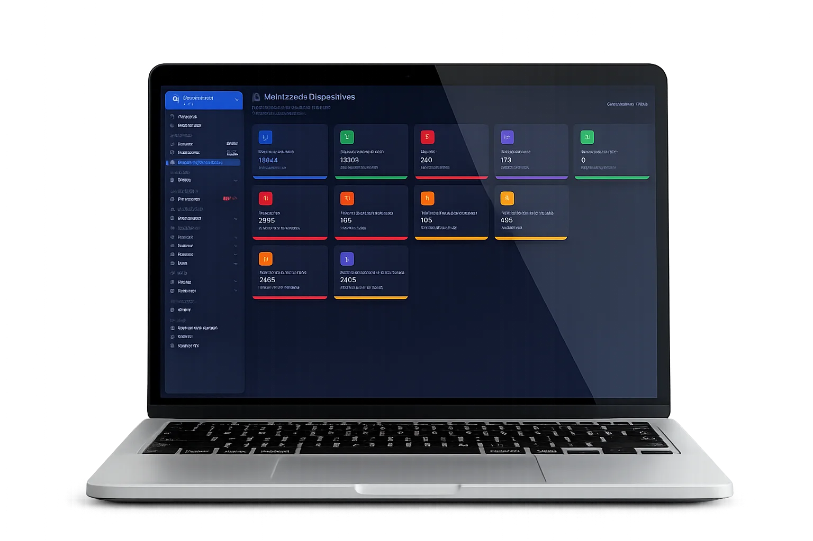
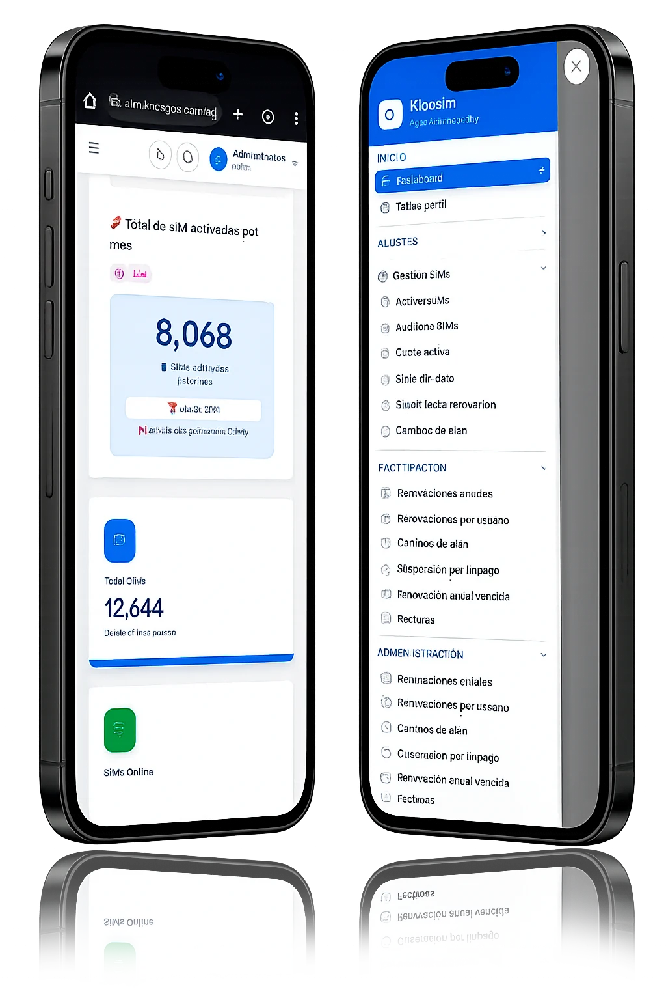
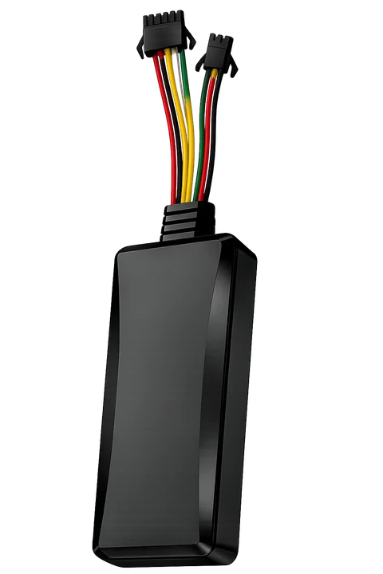
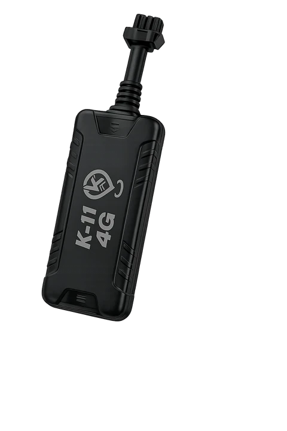
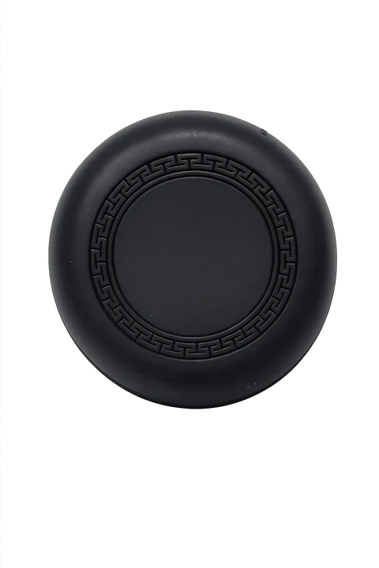
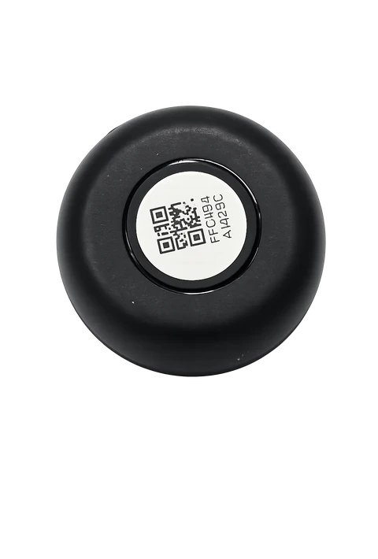

Gestiona toda tu operación desde un solo lugar. Monitorea dispositivos en tiempo real, administra clientes, automatiza procesos y ofrece un servicio de primer nivel con una plataforma escalable y confiable.
Una base de clientes activa que confía en KnoxTrack para operar su flota día a día.
Comprometidos en prevenir quejas y garantizar la satisfacción de cada cliente.
Compatibilidad amplia, siempre sumando nuevos protocolos de dispositivos.
Mantente conectado con alertas en tiempo real. Las notificaciones vía WhatsApp de KnoxTrack te mantienen informado, brindándote una comunicación eficaz y directa para mejorar tu experiencia.
Con nuestra app puedes rastrear cualquier celular o tablet. Ideal para empresas con gestión de flotas, delivery, familiares, animales y personal.
Santiago de los Caballeros, RD
KnoxTrack cuenta con más de 30 idiomas preestablecidos para que puedas trabajar a nivel mundial, adaptándose a diversas industrias y negocios.
En la pantalla principal tendrás acceso rápido a las funciones de encendido, apagado y micrófono, con control total sobre tus dispositivos de rastreo.
Además del rastreo GPS, la plataforma KnoxTrack es compatible con cámaras Dash Cam, sumando video del recorrido a la información de ubicación para darte mayor seguridad y evidencia sobre lo que ocurre en la vía.

Conoce cada detalle de la ruta recorrida por tus vehículos. Nuestra función de seguimiento de recorridos te ofrece una visión completa y precisa de tus trayectos.
32 min · Monumento → Los Jardines
Diversidad de mapas, incluyendo Google Maps, Mapbox Dark, OpenStreetMap y más, para adaptarse a tus preferencias de visualización y navegación.
Convierte un smartphone en un GPS en cuestión de minutos. Ideal para empresas que necesitan rastrear empleados, deliveries, vendedores o cualquier activo móvil directamente desde la plataforma KnoxTrack.
¿No necesitas instalar un GPS? Convierte un celular en un rastreador profesional conectado a KnoxTrack.


Olvídate de las hojas de cálculo. Knox Billing automatiza renovaciones, facturación recurrente, cobros y el seguimiento de pagos para que puedas dedicar más tiempo a hacer crecer tu empresa.

Administra tus líneas SIM IoT desde el celular: activa, suspende y renueva SIMs de toda tu flota en segundos, y mantén el control del consumo y el estado de cada línea en tiempo real.

Dispositivos GPS profesionales, compatibles con la plataforma KnoxTrack desde el primer minuto.




Decenas de negocios de rastreo GPS usan hoy su propia aplicación, publicada bajo su marca y funcionando sobre la plataforma KnoxTrack.
Solicita tu demo gratis y descubre el control total sobre tu flota.